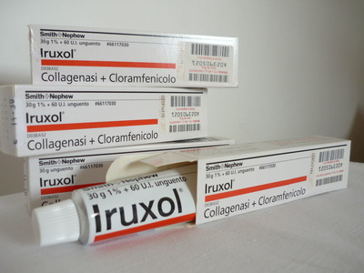

Контактная информация:
Цена: 760 грн/уп.
В наличии
Производитель: Италия
Цена: 760 грн/уп.
В наличии
Именно в FarmItal вы можете купить ируксол,iruxol,ируксол в Украине, Гарантированно Качественный!
Доставка Iruxol осуществляется транспортными компаниями, сроки выполнения заказа оговариваются менеджером Фармитал. Вы можете заказать Ируксол, Ируксол в городах: Одесса, Херсон, Чернигов, Северодонецк, Бердянск, Бровары, Днепр, Винница, Киев, Славянск, Полтава, Краматорск, Белая Церковь, Каменское, Мариуполь, Черновцы, Александрия, Камь янец-подольский, Львов, Запорожье, Кропивницкий, Житомир, Ивано-Франковск, Сумы, Черкассы, Константиновка, Мелитополь, Кривой Рог, Ровно, Луцк, Никополь, Павлоград, Ужгород, Кременчуг, Лисичанск, Хмельницкий, Тернополь, Харьков, Николаев, а также в других населённых пунктах Украины.
Мазь.
Фармакодинамика. Ируксол принадлежит к группе противомикробных средств для местного лечения поражений кожи и ран путем ферментативного очищения от некротических масс игнойных налетов. Сочетание активных ферментов и антибиотика широкого спектра действия хлорамфеникола дает возможность очистки ран от некротических масс и предотвращает распространение инфекции, поддерживая таким образом естественный процесс заживления. ). Следует подчеркнуть, что мазевая основа липофильна и не содержит воды.
С помощью мази Iруксол достигается ферментативное очищение ран без механического раздражения, сопроводительных болей и кровотечений. Небольшие струпья и некротическая ткань при этом расплавляются, а большие – смягчаются, благодаря чему их легко удалить. Ируксол способствует грануляции и не препятствует процессам эпителизации. Препарат не оказывает вредного воздействия на невредимый эпителий, грануляционную ткань, жировую ткань и мускулатуру, то есть мазь не повреждает здоровую ткань.
На початку лікування в ділянці рани можуть спостерігатися місцеві подразнення шкіри (жар, біль), які самостійно минають, тому лікування препаратом не слід припиняти.
В начале лечения в области раны могут наблюдаться самостоятельно проходящие местные раздражения кожи (жар, боль), поэтому лечение препаратом не следует прекращать.
В редких случаях встречаются реакции местной повышенной чувствительности к хлорамфениколу, напр. контактный аллергический дерматит (покраснение, отек, зуд) или экзантема, быстро проходящие после прекращения лечения.Несмотря на то, что при применении Ируксолу системных реакций не отмечалось, длительно (больше, чем назначил врач) применять препарат не рекомендуется.
При лечении Ируксолом следует избегать применения других местных средств (кроме физиологического раствора натрия хлорида), так как тяжелые металлы, антисептические средства, мыла, спирт и другие подобные средства могут инактивировать протеолитические ферменты.
Хранить в недоступном для детей месте при комнатной температуре (15-25°С).